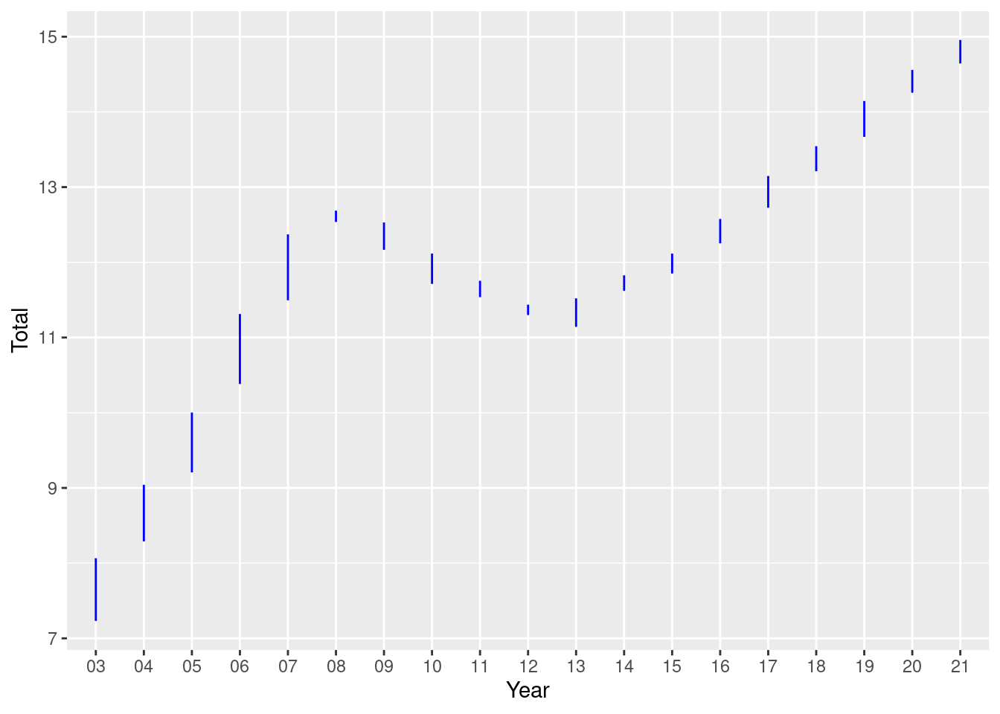
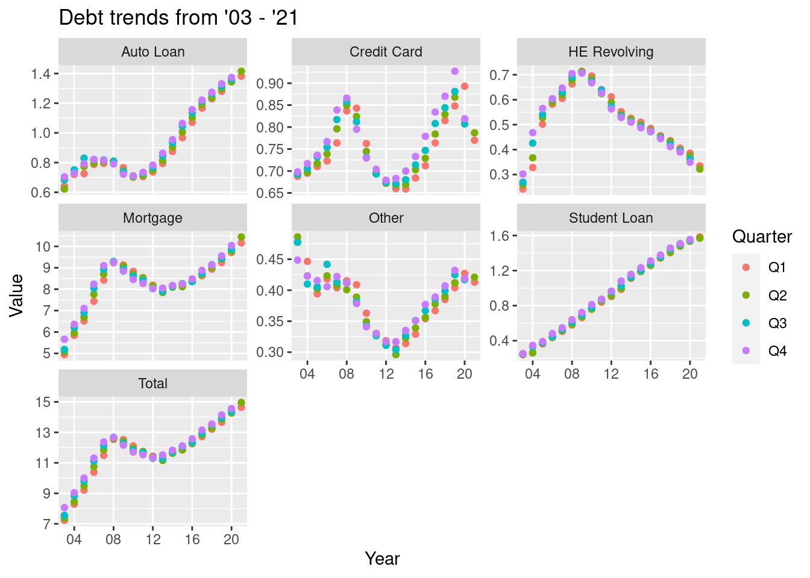

library(tidyverse)
library(ggplot2)
library(readxl)
knitr::opts_chunk$set(echo = TRUE, warning=FALSE, message=FALSE)Challenge 6
challenge_6
debt
Visualizing Time and Relationships
Challenge Overview
Today’s challenge is to:
- read in a data set, and describe the data set using both words and any supporting information (e.g., tables, etc)
- tidy data (as needed, including sanity checks)
- mutate variables as needed (including sanity checks)
- create at least one graph including time (evolution)
- try to make them “publication” ready (optional)
- Explain why you choose the specific graph type
- Create at least one graph depicting part-whole or flow relationships
- try to make them “publication” ready (optional)
- Explain why you choose the specific graph type
Read in data
Read in one (or more) of the following datasets, using the correct R package and command.
- debt ⭐
- fed_rate ⭐⭐
- abc_poll ⭐⭐⭐
- usa_hh ⭐⭐⭐
- hotel_bookings ⭐⭐⭐⭐
- air_bnb ⭐⭐⭐⭐⭐
data <- read_excel("_data/debt_in_trillions.xlsx")
head(data)# A tibble: 6 × 8
`Year and Quarter` Mortgage `HE Revolving` Auto …¹ Credi…² Stude…³ Other Total
<chr> <dbl> <dbl> <dbl> <dbl> <dbl> <dbl> <dbl>
1 03:Q1 4.94 0.242 0.641 0.688 0.241 0.478 7.23
2 03:Q2 5.08 0.26 0.622 0.693 0.243 0.486 7.38
3 03:Q3 5.18 0.269 0.684 0.693 0.249 0.477 7.56
4 03:Q4 5.66 0.302 0.704 0.698 0.253 0.449 8.07
5 04:Q1 5.84 0.328 0.72 0.695 0.260 0.446 8.29
6 04:Q2 5.97 0.367 0.743 0.697 0.263 0.423 8.46
# … with abbreviated variable names ¹`Auto Loan`, ²`Credit Card`,
# ³`Student Loan`nrow(data)[1] 74unique(data$`Year and Quarter`) [1] "03:Q1" "03:Q2" "03:Q3" "03:Q4" "04:Q1" "04:Q2" "04:Q3" "04:Q4" "05:Q1"
[10] "05:Q2" "05:Q3" "05:Q4" "06:Q1" "06:Q2" "06:Q3" "06:Q4" "07:Q1" "07:Q2"
[19] "07:Q3" "07:Q4" "08:Q1" "08:Q2" "08:Q3" "08:Q4" "09:Q1" "09:Q2" "09:Q3"
[28] "09:Q4" "10:Q1" "10:Q2" "10:Q3" "10:Q4" "11:Q1" "11:Q2" "11:Q3" "11:Q4"
[37] "12:Q1" "12:Q2" "12:Q3" "12:Q4" "13:Q1" "13:Q2" "13:Q3" "13:Q4" "14:Q1"
[46] "14:Q2" "14:Q3" "14:Q4" "15:Q1" "15:Q2" "15:Q3" "15:Q4" "16:Q1" "16:Q2"
[55] "16:Q3" "16:Q4" "17:Q1" "17:Q2" "17:Q3" "17:Q4" "18:Q1" "18:Q2" "18:Q3"
[64] "18:Q4" "19:Q1" "19:Q2" "19:Q3" "19:Q4" "20:Q1" "20:Q2" "20:Q3" "20:Q4"
[73] "21:Q1" "21:Q2"Briefly describe the data
This dataset contains the total debt for a country in trillion dollars over a period of 19 years. This data is split into quarters and is subdivided into categories like Mortgage, Auto Loan, etc.
Tidy Data (as needed)
Is your data already tidy, or is there work to be done? Be sure to anticipate your end result to provide a sanity check, and document your work here.
Are there any variables that require mutation to be usable in your analysis stream? For example, do you need to calculate new values in order to graph them? Can string values be represented numerically? Do you need to turn any variables into factors and reorder for ease of graphics and visualization?
This input dataset is tidy but needs some mutations to the column Year and Quarter. This column needs to be split into 2 columns to make it easier to group on Year or Quarter independently
tidy_data <- data %>%
separate(`Year and Quarter`, c('Year', 'Quarter'), sep = ":")
head(tidy_data)# A tibble: 6 × 9
Year Quarter Mortgage `HE Revolving` `Auto Loan` Credit…¹ Stude…² Other Total
<chr> <chr> <dbl> <dbl> <dbl> <dbl> <dbl> <dbl> <dbl>
1 03 Q1 4.94 0.242 0.641 0.688 0.241 0.478 7.23
2 03 Q2 5.08 0.26 0.622 0.693 0.243 0.486 7.38
3 03 Q3 5.18 0.269 0.684 0.693 0.249 0.477 7.56
4 03 Q4 5.66 0.302 0.704 0.698 0.253 0.449 8.07
5 04 Q1 5.84 0.328 0.72 0.695 0.260 0.446 8.29
6 04 Q2 5.97 0.367 0.743 0.697 0.263 0.423 8.46
# … with abbreviated variable names ¹`Credit Card`, ²`Student Loan`nrow(tidy_data)[1] 74unique(tidy_data$Year) [1] "03" "04" "05" "06" "07" "08" "09" "10" "11" "12" "13" "14" "15" "16" "17"
[16] "18" "19" "20" "21"As you can see, we now have 9 columns as the column Year and Quarter has been split into 2. As a sanity check, it has been verified that the data still has 74 rows and that the Year column still has 19 unique values ranging from 03 to 21, just like before.
Time Dependent Visualization
Here, I try to visualize the total debt how it behaves every year.
scatter <- tidy_data %>%
ggplot(mapping=aes(x = Year)) +
geom_line(aes(y = `Total`), color = "blue")
scatter
Visualizing Part-Whole Relationships
Here, I try to visualize the trends of the different types of debts over the years.
First, the data is pivoted so that the data is in a compact form
pivot_data <- tidy_data %>%
pivot_longer(!c(Year, Quarter), names_to = "Type", values_to = "Value" )
pivot_data# A tibble: 518 × 4
Year Quarter Type Value
<chr> <chr> <chr> <dbl>
1 03 Q1 Mortgage 4.94
2 03 Q1 HE Revolving 0.242
3 03 Q1 Auto Loan 0.641
4 03 Q1 Credit Card 0.688
5 03 Q1 Student Loan 0.241
6 03 Q1 Other 0.478
7 03 Q1 Total 7.23
8 03 Q2 Mortgage 5.08
9 03 Q2 HE Revolving 0.26
10 03 Q2 Auto Loan 0.622
# … with 508 more rowsdata_plot <- pivot_data %>% ggplot(mapping = aes(x = Year, y = Value))
data_plot +
geom_point(aes(color = Quarter,)) +
facet_wrap(~Type, scales = "free_y") +
guides() +
labs(title="Debt trends from '03 - '21")+
scale_x_discrete(breaks = c('04', '08', '12', '16', '20'))